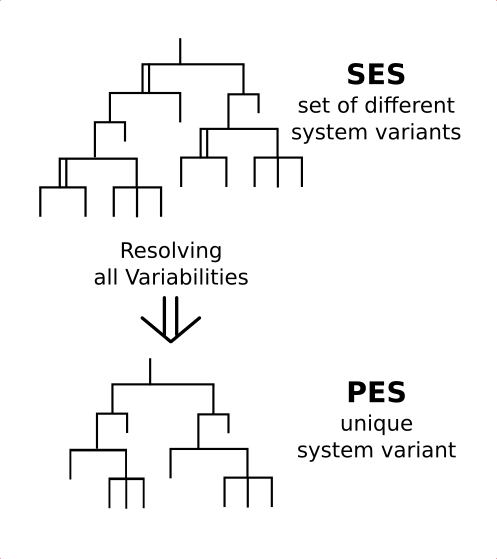

Using the Toolbox API
Motivation
This example shows, how you can use the toolbox API for pruning your SES apart from the Editor with a MATLAB script. The SES here is taken from example 3, which specifies two system variants.
Basic SES:
In the SES specified model structures:
Description
Have a look to the M-file in the example's directory and execute it at the MATLAB prompt. Subsequently, we will explain some fundamental things.
Transferring SES Variables
SES Variables provide the input interface for an SES. All input SES Variables are collected in a cell array. It will look like this:
{SES_Variable1,SES_Variable2,SES_Variable3...}
Each SES Variable itself is a cell array of length 2. The first cell contains the name of the SES Variable as string and the second cell defines the value of the SES Variable.
{'myVar1',12.4564} or {'vecVar',[1,2,3,4,5]} or {'specVar',2}
Summarized, it may look like this:
{ {'myVar1',12.4564} , {'vecVar',[1,2,3,4,5]} , {'specVar',2} }
The order of the SES Variables in the cell array is not important.
The M-Script
The procedure of using the API for pruning can be separated into 3 steps:
%Load your saved SES and save it to a variable of your choice load('B10_modelSES.mat'); mySES = new; %Create a PES object and transfer the SES newPES = pes(mySES); %start the complete pruning operation and %transfer the input SES Variables with their values newPES.prune({{'varVariant',1}}); %optional: save PES myPES.save('PES_varVariant_is_1.mat')
If you need another variant it is enough to repeat the 3rd step with your changed variable values.
Flattening
If you want to use the Flattening method you need to create an FPES object instead of an PES object.
%Load your saved SES and save it to a variable of your choice load('modelSES.mat'); mySES = new; %Create a FPES object and transfer the SES newFPES = newFPES = fpes(mySES); %start the pruning operation and %transfer the input SES Variables with their values newFPES.prune({{'varVariant',1}}); %flattening of the PES newFPES.flatten; %optional: save FPES myFPES.save('FPES_varVariant_is_1.mat') %optional: get Results of FPES [LeafNodes,Coupling,Parameters,Validity] = myFPES.getResults;